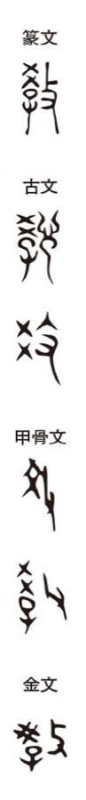

教

teaching
Kun: oso(eru), oso(waru) | On: kyō
to teach, instruct, educate; teaching, doctrine, faith
Explanation
The character 教 in its earliest forms is closely tied to the image of learning and instruction. Its core component 季 is not simply “child” plus “phonetic,” but derives from the archaic form of 学, which originally depicted a building with beams in the 千木 style, representing a schoolhouse. Within this structure, a child is shown receiving instruction, and the added 攴 marks the act of guiding or disciplining with authority. Thus 教 signifies the authoritative imparting of knowledge within a ritual or institutional setting, the deliberate shaping of the pupil through teaching. Over time it generalized to mean teaching, instruction, and the transmission of doctrine.